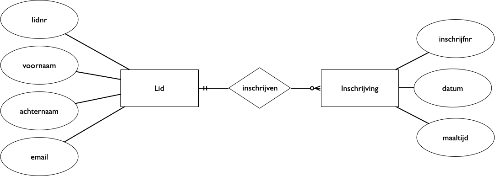
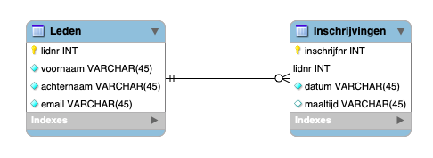

Database-ontwerp¶
Concepten en leerdoelen
analyse, logisch model, fysiek model
informatiebehoefte
model, modelleren
E-R model, entiteit, attribuut, relatie
constraints
redundantie, normaalvorm
functionele afhankelijkheid (als onderdeel van het conceptuele model)
vertalen van E-R model naar fysiek model (voor relationele database)
Van analyse via database-ontwerp naar database-tabellen
Het ontwerpen en maken van een database gebeurt meestal in een aantal stappen.
In de Analyse probeer je te achterhalen wie de database gaan gebruiken, waarvoor en hoe. Welke eisen stellen zij aan het resultaat? In het bijzonder probeer je de informatiebehoefte van de verschillende gebruikers in kaart te brengen.
Op basis van dit resultaat maak je een Logisch ontwerp. Dit kun je weergeven als Entity-Relationship (E-R) model. In dit datamodel probeer je alle relevante elementen en aspecten van de database te formuleren, zonder je daarbij druk te maken over de manier waarop dit in een database vormgegeven kan worden.
Vervolgens vertaal je het E-R model naar een fysiek model ofwel het fysieke schema van een database. Voor een relationele database betekent dit dat je een entiteit vertaalt naar een tabel, en de attributen naar de kolommen van die tabel. Een relatie kun je op meerdere manieren vertalen, afhankelijk van de eigenschappen van de relatie.
Iteratief ontwerp. In de praktijk gebruik je niet altijd een dergelijke top-down of waterval-aanpak. Vaak wisselen de verschillende stappen elkaar af. Uit een eerste analyse maak je een eerste E-R model, bijvoorbeeld voor een deel van de informatiebehoefte; daarmee maak je een eerste versie van de database. Vervolgens neem je een volgend deel van de informatiebehoefte, en pas je, mede op basis van de ervaringen met die eerste versie, het E-R model aan, en vervolgens de eigenlijke database.
Database-evolutie Ook als je op zo’n iteratieve manier werkt heb je te maken met resultaten op verschillende niveaus: analyse, logisch ontwerp en fysiek ontwerp. Deze resultaten leg je steeds afzonderlijk vast: de analyse en het ontwerp vormen belangrijke documentatie bij de database.
Het ontwerpen van een database is niet afgelopen nadat deze in gebruik genomen is. Er ontstaan nieuwe informatiebehoeftes, waarvoor je het ontwerp en de database moet aanpassen. Dit kan wel betekenen dat je bestaande data in de database moet migreren naar een nieuwe versie.
In dit onderdeel gaan we vooral in op de tweede stap: het maken van een E-R model. We gaan kort in op de manier waarop je dit vertaalt naar een fysiek model: de tabellen en constraints van een relationele database.
Voorbeeldtoepassing¶
Als voorbeeld gebruiken we een (web)toepassing waarmee gebruikers zich kunnen inschrijven voor verschillende events - zoals bijvoorbeeld schaakwedstrijden. Een deelnemer moet zich eerst als lid aanmelden, met voornaam, achternaam en email. Een aangemeld lid kan zich bij verschillende events (op verschillende data) inschrijven. Bij inschrijving maakt een lid een keuze uit de verschillende maaltijden bij deze event. Een lid kan zijn/haar inschrijvingen achteraf aanpassen. Een event-organisator kan een overzicht krijgen van de inschrijvingen voor een event.
De verschillende events zijn met hun gegevens (datum, maaltijdkeuze) “hard gecodeerd” in de toepassing. (Deze hoeven niet in de database opgenomen te worden.)
Analyse¶
We slaan het analyse-deel hier grotendeels over. Bij deze analyse inventariseer je samen met de opdrachtgever en gebruiker(s) de processen waarin deze database een rol speelt, en de verschillende schermen die daarbij gebruikt worden. Voor een web-toepassing: welke webpagina’s heb je nodig, welke informatie bieden die aan de gebruikers, en welke informatie kunnen de gebruikers hiermee invoeren?
Entity-Relationship model¶
Een Entity-Relationship (E-R) model bestaat uit entiteiten met attributen, en relaties tussen deze entiteiten.
Een entiteit is een “zelfstandig begrip” waarover je gegevens wilt vastleggen. Dit kan concreet zijn, zoals “Persoon” of “Auto”. Het kan ook abstract zijn, zoals “Afspraak” of “Afdeling”.
Een entiteit wordt beschreven door attributen; anders gezegd, een attribuut beschrijft een eigenschap van een entiteit.
Tussen entiteiten bestaan relaties. Een relatie kun je zien als een bijzonder soort attribuut dat verwijst naar een of meer andere entiteiten (of naar zichzelf).
Voorbeeld van een E-R model¶
We geven hieronder het resultaat van de logische modelleerstap voor de voorbeeldtoepassing, in de vorm van een E-R model.
In het onderdeel Database Ontwerp leer je de beginselen van het logisch modelleren.
Als resultaat hebben we het volgende E-R model:
ER-inschijving
entiteit Lid, met attributen: lidnr, voornaam, achternaam, email
entiteit Inschrijving, met attributen: inschrijfnr, lidnr (relatie), datum, maaltijd
relatie (via lidnr)
We gebruiken het lidnr als identificatie (key) van een lid. Een inschrijving identificeren we via het inschrijfnr.
Het lidnr in de inschrijving verwijst naar het bijbehorende lid: dit is de relatie tussen lid en inschrijving.
Bij dit model kunnen we de volgende constraints formuleren
het email-adres van een lid is uniek
de combinatie (lidnr, datum) van een inschrijving is uniek.
relatie:
iedere inschrijving heeft precies 1 lid
ieder lid heeft 0 of meer inschrijvingen
Bovendien zijn de attributen zijn allemaal enkelwaardig: dat wil zeggen, een lid heeft één lidnr, één voornaam, één achternaam, en één email-adres. Dit volgt uit de notatie: een meerwaardig attribuut heeft een dubbele rand.
Constraints¶
Bij het E-R model horen ook constraints: voorwaarden waaraan de data in de database moeten voldoen. Deze constraints worden bepaald door de wereld die we modelleren. voorbeelden: een geboortedatum moet in het verleden liggen; een persoon heeft precies één geboortedatum; de eventuele huwelijksdatum van een persoon moet na zijn geboortedatum vallen. Een emailadres hoort bij één persoon (in een bepaalde context). Een persoon kan een bepaald moment niet op meerdere plekken aanwezig zijn.
De constraints bij het bovenstaande model zijn:
niet NULL: lidnr, voornaam, achternaam, email; en inschrijfnr, datum mogen niet NULL zijn;
uniek: afgezien van de keys, moet de email van een lid uniek zijn; en moet de combinatie (lidnr, datum) bij de inschrijvingen uniek zijn.
relatie-multipliciteit: iedere inschrijving heeft precies 1 lid; ieder lid heeft 0 of meer inschrijvingen
Omdat iedere inschrijving precies 1 lid heeft, kunnen we de relatie voorstellen door een verwijzing van inschrijving naar lid: we hebben geen aparte relatie-tabel nodig (zoals in het geval van N-M relaties.)
In het geval van een relationele database kunnen we deze constraints in de database weergeven: het DBMS zorg ervoor dat de data in de database aan deze constraints voldoen, door bij elke verandering de nieuwe data te controleren. Een verandering van de data in de database wordt geweigerd als deze een constraint geweld aan doet.
vraag we kunnen een constraint ook schenden door het verwijderen van data. Hoe verwerkt het RDBMS deze?
Opdracht¶
De opdrachtgever blijkt het bij nader inzien toch handiger te vinden om de event-gegevens niet in de code (tekst) van de toepassing op te nemen, maar om deze in de database op te slaan.
Pas het model hierboven aan voor deze nieuwe situatie. Als attributen van een Event kun je o.a. denken aan: datum, kosten, locatie.
Over modelleren¶
Een datamodel vormt een abstractie van de wereld waarin de database gebruikt wordt. Het model bevat alleen alleen de relevante elementen van deze wereld. Een model maak je altijd met een bepaald doel: alleen in de context van het doel weet je wat relevant is, en wat niet: wat mag je weglaten, en wat moet je beslist opnemen? Meestal probeer je een model zo eenvoudig mogelijk te houden: alles wat niet relevant is (voor het doel) laat je weg.
Een goede kennis van het toepassingsgebied is essentieel voor het maken van een goed model: deze kennis heb je nodig om te weten wat relevant is, en wat niet. Bij het opstellen van een conceptueel datamodel moet je daarom regelmatig overleggen met de opdrachgever/gebruiker.
Je kunt een model vergelijken met een kaart: dit laat maar een klein deel van de eigenschappen van het landschap zien. Een kaart is altijd gemaakt met een bepaald doel: alleen de eigenschappen die van belang zijn voor dat doel worden daarop weergegeven.
Voorbeeld: een wandelkaart heeft een andere schaal en bevat andere elementen dan een autokaart van hetzelfde gebied. Een autokaart is onbruikbaar voor een wandelaar, en een wandelkaart is niet zinvol voor een automobilist.
Moet je altijd je eigen model maken?
ja: elke toepassing heeft zijn eigen specifieke kenmerken, elke gebruiker heeft weer andere informatiebehoeftes;
nee: voor steeds meer toepassingsgebieden en deelgebieden bestaan schema’s met gestandaardiseerde entiteiten en attributen.
Bij het onderdeel Linked Data gaan we verder in op het gebruik van deze standaaard-schema’s. Deze zijn vooral belangrijk voor het uitwisselen van gegevens en het koppelen van databases.
Redundantie en normaalvormen¶
In het bovenstaande model hebben we de inschrijvingen en de leden
Vervolg¶
In het onderdeel Database design ga je met complexere voorbeelden aan de slag. Je zult merken dat je voor een realistisch voorbeeld meerdere entiteiten nodig hebt. Het maken van een goed E-R model wordt dan al snel veel lastiger.
leden-inschrijvingen
Opmerkingen¶
Over het lidnr¶
In principe kunnen we in het voorbeeld het email-adres gebruiken als unieke identificatie van een lid.
Toch voeren we een apart lidnr in als unieke identificatie - en als primary key voor de leden-tabel.
Eén van de redenen daarvoor is dat we hiermee de mogelijkheid krijgen om het eemail-adres te veranderen. (Natuurlijk stellen we dan nog steeds de eis dat het email-adres uniek moet zijn.)
Het is gebruikelijk om de primaire key van een database als ‘immutable’ (onveranderlijk) te beschouwen:
deze gebruik je op andere plaatsen in de database mogelijk als foreign key.
Als je de waarde van een primary key verandert, moet je ook alle plaatsen aanpassen waar deze als foreign key gebruikt wordt.
Door het gebruik van een apart en onveranderlijk lidnrvoorkomen we dit probleem.
Dit lidnr gebruiken we dan elders als foreign key.
Over normalisatie¶
Je kunt normaliseren in het logische (conceptuele) niveau, van enititeiten en relaties. Je kunt dit ook later doen, bij het maken van het fysieke ontwerp van de (relationele) database.
Omdat een begrip als “functionele afhankelijkheid” betrekking heeft op het verband tussen het model en de wereld die we modelleren, ligt het voor de hand om de functionele afhankelijkheden te bepalen in deze fase: in veel gevallen heb je hier ook expertise van het toepassingsgebied voor nodig.
Met andere woorden: we streven naar een model waarbij de verschillende attributen van een entiteit alleen afhangen van de key (UID) van die entiteit, niet van andere attributen.
Een apart geval vormen meerwaardige attributen. Bij het vertalen van een E-R model naar een relationele database moeten we deze omzetten in een aparte tabel, om redundantie in de relationele database te voorkomen. We hebben hier niet te maken met redundantie in het E-R model, maar alleen met redundantie in de relationele database.